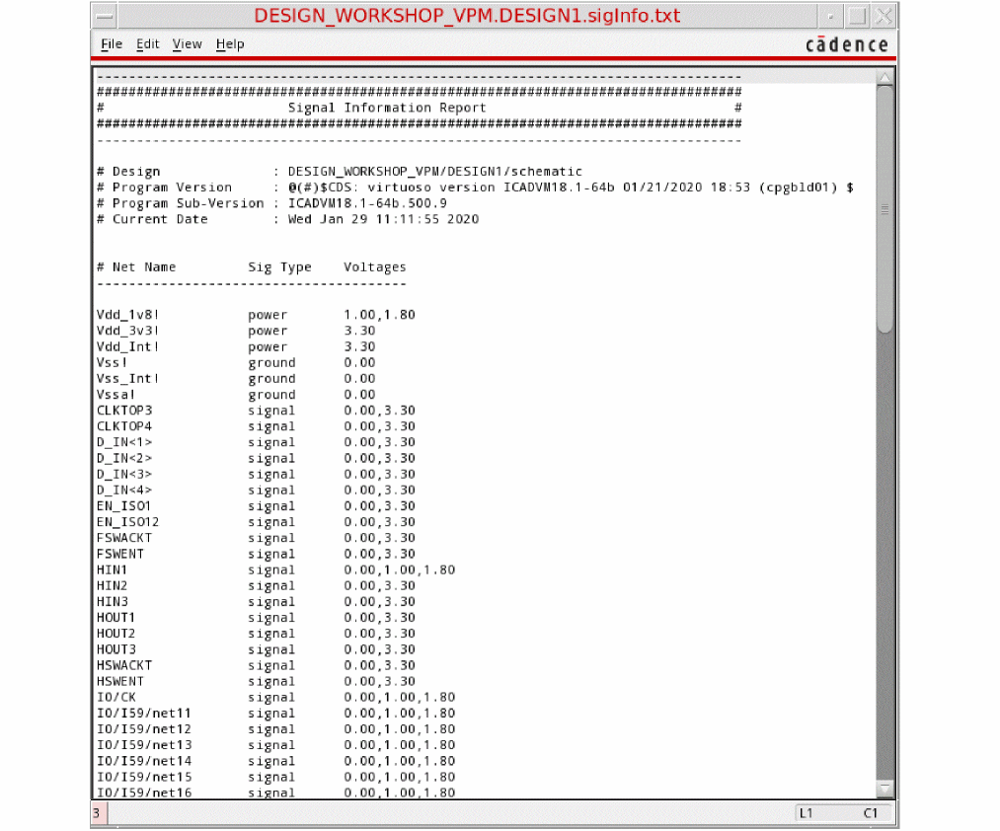

Generating Signal Information
You can assign the voltage information to each design net based on the possible voltage values defined in the Signal Information Report that the net can have under multiple design conditions.
To generate the signal information report:
- Load the setup file. The setup file is needed for identifying the design elements and registering voltage values for different nets.
-
Choose Power Manager – Generate Signal Info. Alternatively, use vpmGenerateSigInfo. The Signal Information Report is created.

Related Topics
Defining the Severity of Design Checks
Checking a Design in Foreground Mode
Checking a Design in Background Mode
Loading the Violations Database
Return to top